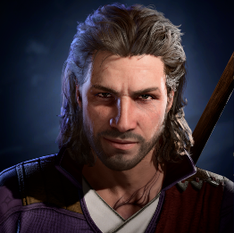

Супутники
Упродовж вашої подорожі ви зустінете безліч персонажів, що можуть стати вашими спутниками. Давайте розглянемо деяких з них.

Астаріон
Ельф-вампір, що шукає свободи від свого господаря.
Тінесерда
Клерик богині Шар, розривається між вірою та новими почуттями.

Гейл
Маг із Таю, який приховує магічну аномалію в серці.
Лей'зель
Войовнича гітьянкі, прагне довести свою честь у власному клані.
Вілл
Людський герой, що уклав небезпечний пакт із демонічною сутністю.
Карлак
Смілива воїтелька, утікачка з дев’ятого кола Пекла.